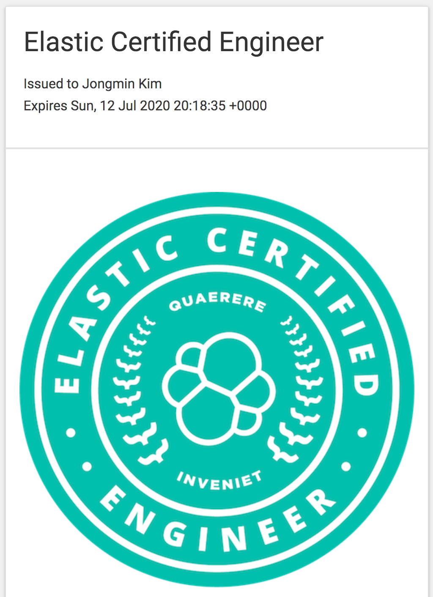

2018년 7월 Elastic에서 첫번째 공식 자격증을 내 놓았습니다.
신청은 아래 링크에 가서 하면 됩니다.
https://training.elastic.co/exam/elastic-certified-engineer
응시 가격은 400 달러 입니다.
저도 시험이 어떻게 생겼는지 문의가 밀려올 것이 뻔해서 우선 봐봤습니다.
결과부터 말씀 드리면, 합격했습니다. 🤓
출제 범위
신청 페이지 안에 들어가면 어떤 문제가 출시되는지에 대한 Exam Objectives 내용이 있습니다. 대충 아래와 같네요.
Installation and Configuration
- Deploy and start an Elasticsearch cluster that satisfies a given set of requirements
…Indexing Data
- Define an index that satisfies a given set of requirements
…Queries
- Write and execute a search query for terms and/or phrases in one or more fields of an index
…Aggregations
- Write and execute metric and bucket aggregations
…Mappings and Text Analysis
- Define a mapping that satisfies a given set of requirements
…Cluster Administration
- Allocate the shards of an index to specific nodes based on a given set of requirements
…
위 내용이 전부 다 나오진 않습니다만 어떤게 나올지 모르니 준비는 다 해야겠지요. 시험은 단답형이나 다지 선다형이 아닌 전부 실습 형태로 진행됩니다.
시험 준비
먼저 시험을 신청을 완료하게 되면 시험을 주관하는 https://www.examslocal.com 라는 시스템에 접속해서 계정을 만들라는 메일을 받게 됩니다. 여기에 접속을 하고 메일로 받은 코드로 내가 볼 시험을 찾아 등록하면 시험 볼 날짜와 시간을 직접 지정하게 됩니다. 시험 시간은 3시간 입니다. 시험 스케줄 등록을 마치면 남은 시간이 나오며 24시간 전에 리마인드 메일이 또 옵니다.
시험을 볼 장소, 컴퓨터 등의 환경들을 직접 준비해야 합니다. 시험 볼 컴퓨터에는 웹캠, 마이크 장비가 달려 있어야 합니다. 그리고 Compability Tool 메뉴에 가면 미리 필요한 환경을 체크 해 볼 수 있는 메뉴가 있습니다. 사용할 웹 브라우저에 플러그인을 설치 해야 하고, 네트워크 속도도 정확히 기억은 안 나지만 10MBps 이상은 되는지 체크 해야 했습니다.
시험 시간인 3시간 동안에는 격리된 공간에 있어야 하며 아무도 출입하면 안됩니다. 시험을 보는 동안 얼굴과 상반신을 웹캠이 비추고 있어야 하고 마이크로 방 안의 소리를 들리게 한 상태로 원격으로 감독관이 감독을 하게 됩니다. 당연한 이야기지만 시험 중간에 누가 들어온다거나, 말을 한다거나, 휴대폰이 울리면 시험은 중지됩니다.
시스템에 접속하면 시험 시작 15분 전에 부터 감독관과 대화가 가능하고 준비를 할 수 있습니다. 먼저 감독관이 웹캠으로 시험을 볼 장소와 테이블 위를 비추게 하는데, 테이블에는 아무것도 있으면 안됩니다. 저도 시험 보면서 마시려고 커피랑 초콜릿 몇개를 갖고 들어왔는데 다 치우라고 요구하더군요. 😱
3시간 동안 아무것도 먹거나 마시거나 화장실 다녀오거나 할 수 없으니 미리 몸 상태를 조절 해 놓기 바랍니다.
시험이 진행되는 동안 브라우저에 설치된 플러그인이 웹캠과 데스크탑 화면을 계속해서 감독관에게 공유합니다. 화면 캡쳐나 기타 꼼수 프로그램 실행 등은 할 수 없습니다.
웹 브라우저로 시스템에 접속하면 감독관이 1:1 채팅으로 계속 이야기를 합니다. 먼저 시험을 볼 브라우저 외 다른 프로그램들은 모두 닫으라고 하고, 브라우저도 시험 환경 페이지 외에 다른 탭은 모두 닫으라고 합니다. 그리고 실행중인 응용 프로그램 창 (맥의 경우 option+command+esc) 을 띄워 실행중인 불순한 프로그램이 없는지도 확인을 합니다. 그리고 준비가 다 되면 시험을 시작합니다.
시험 진행
시험은 웹 브라우저를 통해 원격으로 CentOS의 X-Window에 접속해서 진행을 합니다. 필요한 설정들이 다 셋팅이 되어 있고 처음 시작하면 시험 진행 방법과 시험 문제가 나와 있는 (VM 내) 크롬 브라우저가 하나 떠 있습니다.
일단 기쁜 소식은 Kibana 를 사용할 수 있습니다. 자동 완성이 된다는 이야기지요. 그리고 elastic.co 의 도큐먼트를 보는것도 허락됩니다만, 모두 VM 안에 있는 브라우저로 해야합니다. 이게 상당히 곤욕스러운게, 서버가 미국에 있어서 그런지 굉장히 느리고 답답합니다. 도큐먼트좀 찾아보려고 가서 스크롤 하면 1초 정도 있다가 뚝,뚝 끊기면서 내려가서 다시 올리고 하는데 뒷모가지가 막 땡겨옵니다. 오히려 감독관이 제 의자 뒤에 앉아서 감독하고 제 로컬 머신의 브라우저로 시험을 볼 수 있었으면 훨씬 더 편하겠다는 생각을 했습니다. 이게 은근히 신경쓰이고 시간을 잡아먹어서 로컬에서 할 때 보다 체감상 시간이 3배 정도 걸리는것 같았습니다.
시험을 보는 도중에 턱을 괴거나 얼굴을 모니터에 가까이 대거나 하면 감독관이 채팅창으로 좀 더 뒤로 가서 바른 자세로 앉으라고 이야기 합니다. 입을 가리는것도 부정 행위로 간주된다고 경고를 주고요.
3시간 동안 쉬지도 못하고 정자세로 꼿꼿히 앉아서 시험을 봐야 합니다. 저는 시험 끝나고 나서 목에 디스크가 왔습니다.
시험 문제
제가 본 것만 말씀드리기 때문에 다른 문제가 나올 수도 있습니다. 캡쳐나 문제에 대한 피드백등을 주지 않기 때문에, 제 기억에만 의지해서 설명 드리도록 하겠습니다. 지금부터 설명드리는 내용은 전부 원격 환경 안에서 진행해야 합니다. 예를 들면 Kibana도 내가 시험 보는 로컬 머신의 브라우저 안에 있는 원격 환경 안에서 브라우저를 다시 띄워서 사용해야 합니다.
처음 원격 환경에 접속하면 브라우저가 하나 띄워져 있고 시험 내용에 대한 설명 창이 떠 있습니다. 답안도 이 브라우저 안에 적고 진행 버튼을 눌러 다음 문제로 넘어가는 형식입니다.
문제는 총 12 문제가 나왔습니다. (이것도 정해진 것이 아닐 수 있습니다.)
1번 문제는 시험 환경에서 또다시 ssh로 터미널 접속을 해서 3개의 elasticsearch 노드를 실행시켜서 클러스터를 구동시키는 문제였습니다. 몇가지 환경에 대한 조건이 주어지는데 (예: 1번 노드는 master dedicated 노드로 하고, 2번 노드는 hot, 3번 노드는 warm 으로 설정) 이 조건을 모두 만족하는 클러스터를 구동하는 것입니다.
문제가 어렵지는 않아 보이나, 원격 안에서 또 다시 다른 터미널로 왔다 갔다 하면서 elasticsearch.yml 을 vim 등으로 작업해야 해서 손이 많이 갑니다. 설정 하나 빼먹어서 실행 제대로 안되면 또 다시 3개 다 체크하는 등의 작업을 해야 해서 은근히 시간이 걸렸습니다.
1번 문제 풀고 나니까 30분이 지났더군요. 속으로 망했다… 싶었습니다. 😭
다행이 이후 몇 문제는 크게 어렵지는 않은 문제가 나왔습니다. 주어진 조건대로 query, aggregation 등을 짜서 정답란에 쿼리문을 제출하는 문제가 5~6 문제 나왔던 것 같습니다.
중간에 _reindex, ingest pipeline, painless script 를 조합하는 문제가 몇개 나왔는데, 실무에서 일반적인 사용법만 경험하신 분들은 좀 어려울 수 있을것 같았습니다. 예를 들면 이미 데이터가 들어있는 A 라는 인덱스가 클러스터 안에 들어있습니다. 그걸 위 기능들을 이용해서 특정 필드의 매핑을 바꾸거나 필드를 추가해서 x 필드의 배열 값을 숫자로 넣는다던지 해서 새로운 B 인덱스로 재색인 하는 형식의 문제입니다.
이런 형식의 문제들은 답안 제출란이 없고 그냥 다음 문제로 넘어가는 버튼만 있습니다. 아마 시험이 끝나면 채점관이 B 인덱스를 확인하고 채점하는 것 같았습니다.
시험범위 중에 cross cluster search 도 있는데 저는 나오지 않았습니다. painless script 는 두세 문제 나왔기 때문에 이건 꼭 한문제 이상 나온다고 생각해도 될것 같습니다.
Elasticsearch Engineering 공식 교육을 수강하면 확실히 도움이 많이 될 것 같습니다. 문제가 실습에 나오는 패턴과 많이 유사합니다.
시험이 끝난 후
시험 시스템이 좀 불안했던건지, 제가 잘못한건지 모르겠는데, 시험 끝나고 제출 버튼을 눌렀는데 화면이 정지됬습니다. 감독관이 당황하면서 기술자들에게 확인하겠다고 기다리라고 해서 시험 끝나고 무려 50 여분을 더 기다렸습니다. 시험 보기 위해 예약한 미팅룸 시간이 끝나가서 감독관에게 여기 예약이 끝나간다고 하니 그럼 잠깐만 브라우저 다른 탭 여는걸 허락할테니 지금 시간 늘리라고 하더군요. 50여분이 지나고 나서 제가 저장한 답변들이 시스템에 제출이 된걸 확인하고 나서 나올 수 있었습니다. 아마 미국은 일하는 시간이 아니어서 엔지니어들도 확인하는데 시간이 걸렸던 것 같습니다.
시험 안내문에 시험 후 working day 기준으로 3일 후에 결과가 나온다고 되어 있는데, 아직 시스템에 문제가 좀 있는것 같습니다. 4일째 certification 프로그램을 관리하는 Elastic 직원에게서 시험 합격했다는 메일이 왔고, 뱃지는 며칠 더 기다리라고 하더군요. 한 1주일 기다리니 뱃지 링크가 왔습니다.
https://badge.trueability.com/issued_certifications/ZvNgWmgkj51

Elastic Certified Engineer 시험을 준비하고자 하시는 분들께 이 글이 조금이나마 도움이 되길 바랍니다. 🤓